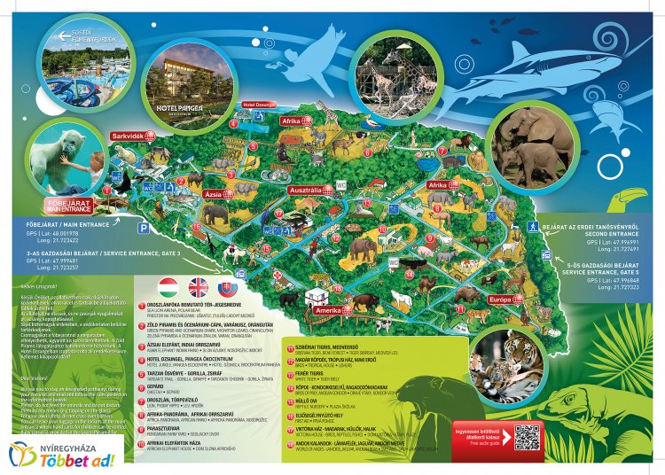

Programok
Sóstó Zoo
Nyíregyháza állatparkja sok érdeklődőt vonz magához. Európa egyik legnagyobb állatállománya található meg itt. Egy fél- vagy akár egy egész napot is el lehetne itt tölteni, hiszen a parknak saját étkezdéje is van.
Hősök tere
Egy gyönyörű parkosított tér, aminek történelmi vonatkozása is van. Jó programlehetőség lenne, ha például ebéd utáni pihenés gyanánt a diákok itt foglalkozhatnának szabadon.
Városi jégpálya
Egy 1800 négyzetméteres jégkorcsolyapálya, büfével, ruhatárral. Egy fél napos kikapcsolódásnak pont tökéletes lehet, viszont hátránya, hogy csak novemberben és decemberben van nyitva.
Netkvíz

A netkvíz egy interaktív mobilos program, amivel olcsón, jó időre le lehet kötni a diákokat, helyszíntől függetlenül. Egy alkalmazás, amit mobilon vagy tableten lehet használni kérdéseket tesz fel a diákoknak, akik akár csoportba rendeződve egymás ellen is versenyezhetnek. Idelális program egy osztálynak, mert edukatív és szórakoztató is.
Fazekas bemutató és kézműves foglalkozás
Rendkívűl olcsón egy izgalmas és érdekes programon vehetünk részt ezen a foglalkozáson. Megtanítják a diákokat agyagból fazekakat csinálni, és ezt a gyakorlatban is kipróbálhatják. Viszont előfordulhat, hogy nem mindenkinek tetszene ez a program, ezért ajánlott ide egy olyan osztállyal menni, ahol több az olyan ember, akinek jó a kézügyessége.